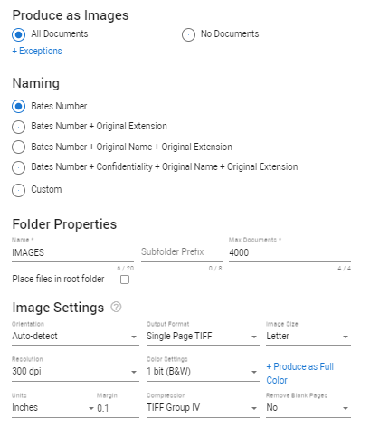
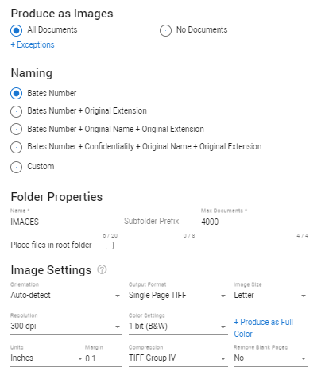

In the Document List, select the settings icon
 .
.
Then, select Productions > Create for Selection/Documents. For more information on starting a production, see Productions.

Step two of the production wizard. This is where you define if and how documents are produced as images.
In the Document List, select the settings icon
.
Then, select Productions > Create for Selection/Documents. For more information on starting a production, see Productions.

All Documents
All documents added to this production, will be produced as images.
+ Exceptions: Selected file types will be produced as natives.
No Documents
No documents added to this production will be produced as images. However, there will be image placeholders. When selected, continue with Native Settings.
Define how you want to name your images. The first three options are most commonly used.
Bates Number
Bates Number as defined in step 1 of the Production Wizard.
Bates Number + Extension
The extension (file type) of each document will be added to the bates number.
Bates Number + Original Name + Extension
The original name of the document will be placed between the bates number and the extension (file type).
Bates Number + Original Name + Extension
The original name of the document will be placed between the bates number and the extension (file type).
Bates Number + Confidentiality + Original Name + Extension
If all images are confidential, you can add that to the naming.
Custom
Alternatively, define your own naming convention. Add metadata (fields) from your matter.
Define where you want to store your images.
Name
The name of the folder in which the images will be saved.
Subfolder prefix
The subfolder prefix will always be followed by a number.
Max documents
Define the maximum number of documents allowed in a folder.
Each image is one page of a document. The images of one document will never be split over two folders. The first document that is too large to fit in one folder, will be placed in its entirety in the next folder. If the document is still too large for this new folder, it will be placed in this folder nevertheless.
You can select Place files in root folder to place the files in the same root folder of the same file type. When enabled, the images are not placed in subfolders, but in the same image folder.

Orientation
Produce all images with the Portrait, Landscape or Auto-detect orientation. With Auto-detect, images can be produced based on the detected orientation of the original document.
Images are downscaled to fit (keeping the aspect ratio). They will never be cropped.
Output format
Choose from Singlepage TIFF, Multipage TIFF, Searchable PDF and Searchable PDF (quality).
Each (Searchable PDF) profile has a different impact on the quality and performance of the OCR process used to create the searchable PDF. It will have no influence on the quality of images. It will mostly be noticeable with the text in files of an already lower quality.
Singlepage TIFF
Creates a TIFF image consisting of 1 page.
Multipage TIFF
Creates a TIFF image consisting of 2 or more pages.
Searchable PDF
Creates a PDF file that can be searched.
Choose this option for fast performance, but slightly lower quality (mostly noticeable with the text in files of an already lower quality).
Searchable PDF (quality)
Creates a PDF that can be searched.
Use this option for high quality, but slower performance. Please note that this option is not recommended as the performance is considerably slower.
Accessible PDF
Creates a PDF that complies with the WCAG 2.1 depending on the lay-out and format of the original document. Web Content Accessibility Guidelines (WCAG) 2.1 defines how to make Web content more accessible to people with disabilities. Accessibility involves a wide range of disabilities, including visual, auditory, physical, speech, cognitive, language, learning, and neurological disabilities.
Please note that due to the nature of ZyLAB ONE, ZyLAB ONE doesn't create any documents from scratch. Documents will be produced as is and if the original is formatted in a way that doesn't comply with the WCAG 2.1 standard, ZyLAB ONE will not change that. Examples of formatting that prevents document to be compliant with WCAG 2.1 are small font types or black text on a grey background that lowers the contrast.
Image size
Choose from Letter (8.5x11.0 in/216x279 mm), A4 (8.3x11.7 in/210x297 mm), Legal (8.5x14.0 in/216x356 mm) or Auto (the original image size will be produced; this will overrule the Orientation setting).
Resolution
The lower the resolution, the less disk space you will need. However, the risk of data loss will increase. Choose from 100, 200, 300, 400, 500 or 600 dpi.
Color settings
Recommended Settings: For black and white: 1 bit color and 300 dpi For color: 24 bit color and 200 DPI.
Not Recommended: 8 bit color and 8 bit greyscale. Use these option only for specific use cases.
When data loss might be an issue, for example when converting from color to black and white, it is advised to produce color images. However, be careful, because the resulting files will take up more space.
+ Produce as Full Color
If you selected 1 or 8 bit, you can produce - as an exception - a number of images in full color (24 bit).
Select the file types you want to be produced as full color.
Compression
You do not need to define the Compression, as it is related to the chosen color setting. It is displayed here for your convenience.
Burn-in fields (electronic stamping) cannot be removed and will always appear when the document is printed. The image is shrunk slightly and the stamp is applied to a small margin on each page.
Type [ or Ctrl+space to select a field.

Define the font family, font size, date format and the margin. It is recommended to always define a small distance from the edge of the paper, so no information will be lost when the page is printed.
Redactions are defined during the review process. During production, the redactions to the sensitive information can be included.
Change the appearance of the redaction. Choose from:
As on document.
White with black borders.
Transparent with black borders.
Custom
Specify the Fill Color, Font Color and Border Color; Select the field and adjust it.
You can also make the colors transparent.
When more than one redaction has been applied to the same area, you can choose whether the underlying redaction codes are visible when running a production.
To show only the top redaction, select the option to Enable.

Reviewers may have added reasons to explain why the information has been redacted/obscured, the redaction exemption reasons. These reasons can be added to the production and burned into the image.
Choose from In left margin or On top of a redacted area.
|
|
Note: If redactions are added to documents produced as images, the related text files will not be produced, since it is not possible to redact text files. Even if only a single word is redacted, the related text file will not be produced. Please note that fields cannot be redacted. Fields that contain text that should have been redacted should not be included in the production. Exclude those fields from the load file. |
When enabled, fully redacted pages are not produced. This prevents visual clutter and increase focus on pages containing information. When disabled, all fully redacted pages will be included in production.
When enabled, withheld pages will keep the original bates numbers. Though this means that your production will contain gaps in the bates number range on the pages, the advantage is that you can rerun the production without withholding pages and still get the original bates numbers on your pages.
Use Placeholder for fully redacted Documents only
This single placeholder replaces a complete document that is being withheld.
Use Placeholder for all Withheld Pages
Enabling this will generate a placeholder for every range of withheld pages. One document with multiple fully redacted pages or page ranges can contain multiple placeholders.
Define the message that will be displayed inside the placeholder. Press Ctrl+Space to see a list of fields to choose from.
Placeholder documents replace and define the unprocessed files. A file might not be produced for various reasons, most commonly for privileged or technical reasons. When files are only produced in the native and/or text format, an image placeholder will be produced for each file. In this placeholder, information about the file (that is not produced as an image) will be included. A placeholder document is an image Tiff file.
Select one or more default placeholders.
File name
This will be the file name used after production, with Bates number.
File path
This will be the file path used after production.
Original file name
Original file size
Originial file path
Custom placeholders can contain document field expressions. Every field and production metadata can be added as output.
Example:
"This document could not be produced. Please see the production log for the exact reason. Bates number: [docproperties:bates]; Original file path: [docproperties:path]"